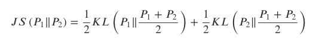
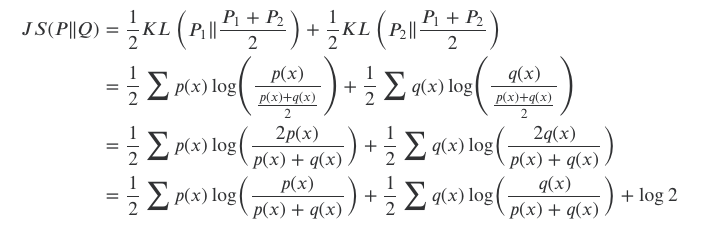
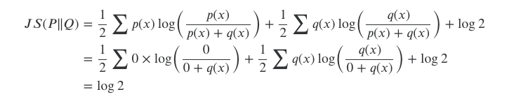
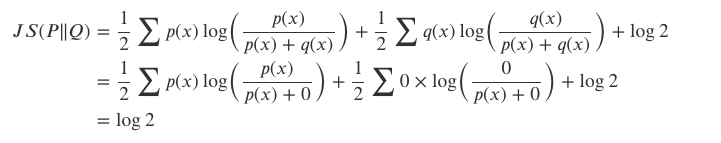

1. 概述
KL散度存在不对称性，为解决这个问题，在KL散度基础上引入了JS散度。

JS散度的值域范围是[0,1]，相同则是0，相反为1
2. 性质
这个公式对于P1和P2明显是对称的，而且由于是两个KL叠加，故JS具有对称性和非负性。
当 𝑃1=（𝑃1+𝑃2）/ 2=𝑃2时，两个KL值均为0，故JS为0。也就是说当两个分布相同时JS为0。
KL散度和JS散度度量的时候有一个问题：
如果两个分配P,Q离得很远，完全没有重叠的时候，那么KL散度值是没有意义的，而JS散度值是一个常数。这在学习算法中是比较致命的，这就意味这这一点的梯度为0。梯度消失了。
3. 证明
证明两个分布完全不重叠时，JS散度是一个常数。

由于两个分布完全不重叠，故必有p(x)或q(x)为0
p(x)=0时

q(x)=0时

这就是JS散度的缺陷，当两个分布完全不重叠时，即便两个分布的中心距离有多近，其JS散度都是一个常数，导致梯度为0，无法更新。